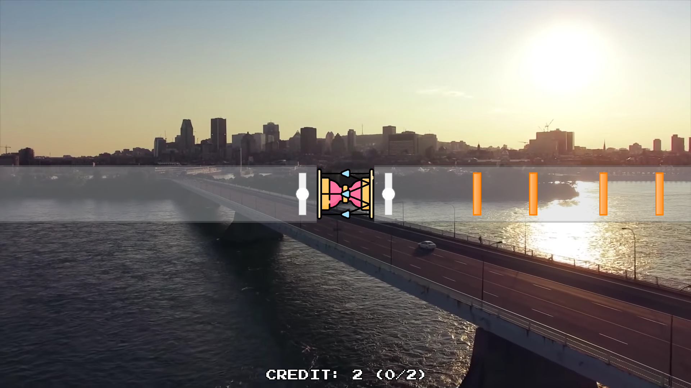
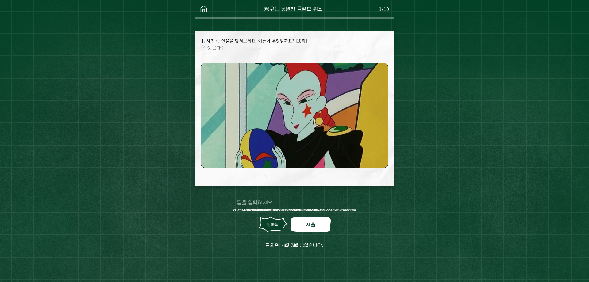
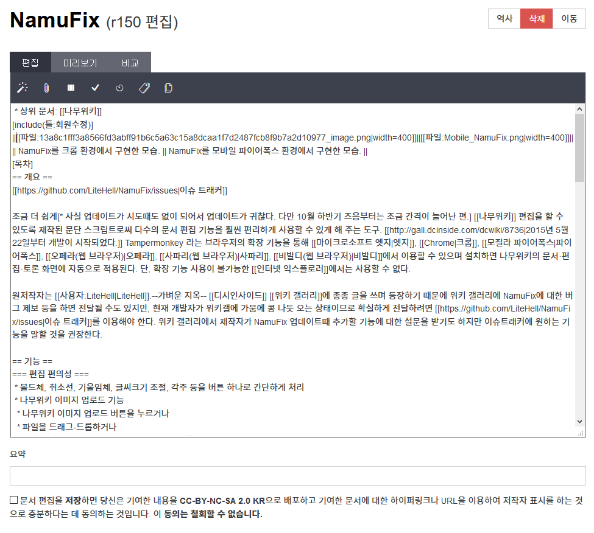
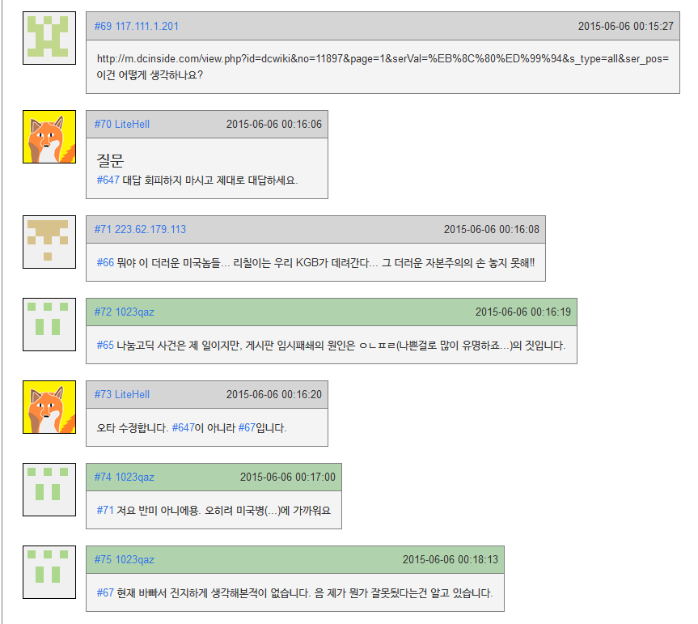

신연진
Software Engineer
자기소개
안녕하세요! 소프트웨어 개발을 좋아하고, 평소 리눅스를 이용하는 신연진입니다.
웹, 게임, 응용 소프트웨어 등 다양한 영역에서의 개발을 즐깁니다.
지금 보고 계신 이 포토폴리오는 https://yeonjin.name/portfolio에서도 보실 수 있습니다!
경력 및 인턴십
- 2024 ~2024 ~
주식회사 슈르
소프트웨어 개발자- 2024년 6월에 입사하여, React와 Firebase를 이용해 슈마루의 백오피스를 개발함
- Google Cloud Function이 이용된 백엔드와 Vue와 Firebase가 이용된 프론트엔드를 유지보수함
- 20242024
주식회사 슈르
프론트엔드 인턴 개발자- 2023년 12월 말부터 2024년 2월 말까지 근무함
- Typescript를 이용하여 고인물테스트 서비스의 프론트엔드를 개발함
학력
- 2019 ~ 20242019 ~ 2024
중앙대학교 소프트웨어학부
학점: 4.23/4.5- 2021 ~ 2022년: 군휴학(병역필)
- 2024년 8월 조기졸업, 최우등졸업
프로젝트
특별한 언급이 없다면 제가 전부 다 만든 프로젝트입니다. 다만 몇몇 오픈 소스 프로젝트의 경우 다른 개발자분의 기여가 있습니다만 대부분의 코드는 제가 작성했습니다.
중요한 프로젝트만 표시됩니다. 모든 프로젝트를 표시하려면 여기를 클릭하세요.
- 20242024
바이드럼
바이드럼은 장구 형태의 장치를 이용하는 아케이드 리듬게임으로, Rust 언어와 SDL2 프레임워크를 이용하여 개발됐습니다.
- X Window System이 설치된 경량화된 Linux를 이용한 임베디드 시스템을 제작했습니다.
- 시리얼 통신을 이용해 실제 장구를 이용한 하드웨어 컨트롤러 및 동전인식기/지폐인식기와 연동했습니다.
- FFMpeg 라이브러리를 이용한 비디오 디코딩을 구현했습니다.
- 타격시 타격 장치와 타격된 부위를 인식하는 컨트롤러를 구현했으며, 이에 대한 특허를 출원했습니다.(관련 특허 출원)
- 20242024
고인물테스트
고인물테스트는 주식회사 슈르의 비영리 퀴즈 웹사이트로, Typescript를 이용하여 프론트엔드 개발에 참여했습니다.
- 2016 ~ 20192016 ~ 2019
NamuFix
나무위키의 편집과 관리, 그리고 이용을 편하게 해주는 웹 브라우저 확장 스크립트입니다.
- CSS와 HTML에 대한 지식에 기반하여 Javascript로 개발했습니다.
- 오픈소스 소프트웨어로서 약 100개의 이슈를 해결했습니다.
어학 및 자격증
- 20242024
정보처리기사
- 20232023
TOPCIT 수준4 (695점)
특허 출원
- 20242024
리듬 게임 장치 및 이의 동작 방법
타격 도구의 종류 및 타격 대상을 구분 식별 가능한 리듬 게임 장치 및 이의 동작 방법에 관한 특허입니다.
- 특허 출원번호: 10-2024-0071150
- 출원일(소급): 2024년 3월 5일
교내 활동
- 2023 ~ 2024
- 2023 ~ 20242023 ~ 2024
알고리즘 학회 ChAOS 부회장
소프트웨어학부 알고리즘 학회 ChAOS의 부회장직을 역임하며 다음과 같은 활동을 했습니다.- 알고리즘 문제풀이 스터디 활동 운영
- 알고리즘 경진대회 스태프 참여
- 2020 ~ 20212020 ~ 2021
만화두레 부회장
중앙동아리 만화두레의 부회장을 역임하며 다음과 같은 활동을 했습니다.- 회계내역 작성, 동아리 관련 행정 및 사무
- 그림 스터디 활동 운영
- 동아리 홈페이지의 개발 및 유지보수
- 동아리 내부위키의 유지보수 (현재는 운영되지 않음)